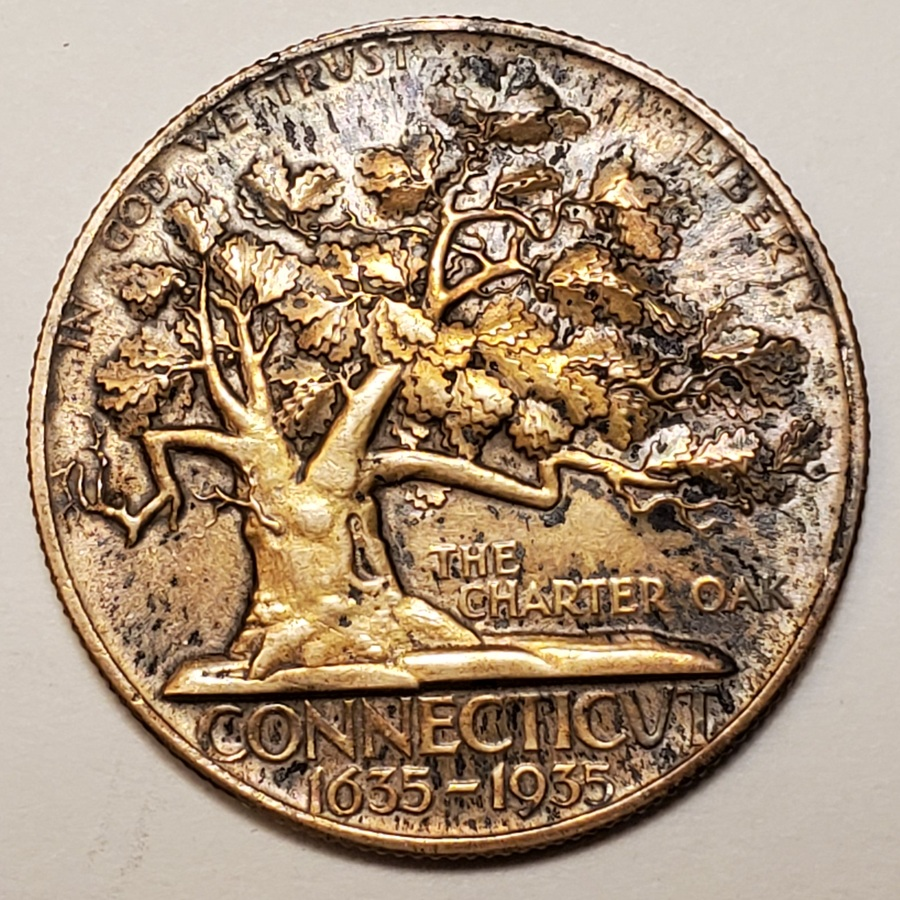

01 · Two records available
Commemorative half dollars
Connecticut, Bridgeport, and the Arkansas-Robinson issue.
Coins & medals · Collection in preparation
Kreis brought the discipline of architectural relief to commemorative coins, exhibition medals, and honors designed to be held in the hand.
This section will document obverse and reverse designs together, with issue history, inscriptions, dimensions, minting or casting details, and links to related awards and events.

01 · Two records available
Connecticut, Bridgeport, and the Arkansas-Robinson issue.
Society issues, institutional honors, exhibitions, and commemorative medals.
Competition entries, plaster models, prototypes, and designs that were not issued.